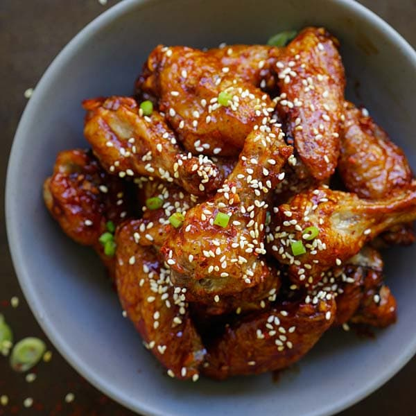

Korean Hot Wings

Description
Finger-licking good, Korean-style hot wings made easy and simple. The sauce can be made up
to two weeks ahead of time; flavor will intensify.
Ingredients
- 1 cup low-sodium soy sauce
- ¾ cup dark brown sugar
- ¼ cup ketchup
- 3 tablespoons barbeque sauce
- 2 tablespoons minced garlic
- 1 tablespoon rice wine vinegar
- 1 tablespoon chile-garlic sauce (such as Sriracha) (Optional)
- 1½ teaspoons ground black pepper
- 1 teaspoon Asian (toasted) sesame oil
- 1 teaspoon grated fresh ginger
- 1 tablespoon cornstarch
- 1 tablespoon water
- 1 quart peanut oil for frying, or as needed
- 4 pounds chicken wings
- 2 tablespoons lemon-pepper seasoning, or to taste (Optional)
Steps
- Stir soy sauce, brown sugar, ketchup, barbeque sauce, garlic, vinegar, chile-garlic sauce, pepper, sesame oil, and ginger together in a saucepan; bring to a boil.
- Whisk cornstarch and water together in a small bowl; stir into the sauce. Remove from heat and set aside to cool and thicken.
- Heat oil in a deep-fryer or large saucepan to 360 degrees F (182 degrees C).
- Season chicken wings with lemon-pepper seasoning.
- Fry chicken wings in batches of 6 to 8 at a time in hot oil until no longer pink at the bone and the juices run clear, 6 to 8 minutes per batch. An instant-read thermometer inserted into the meatiest part of the wing, near the bone, should read 165 degrees F (74 degrees C).
- Put cooked wings into a large mixing bowl. Ladle sauce over the wings and toss to coat.
Return to Home